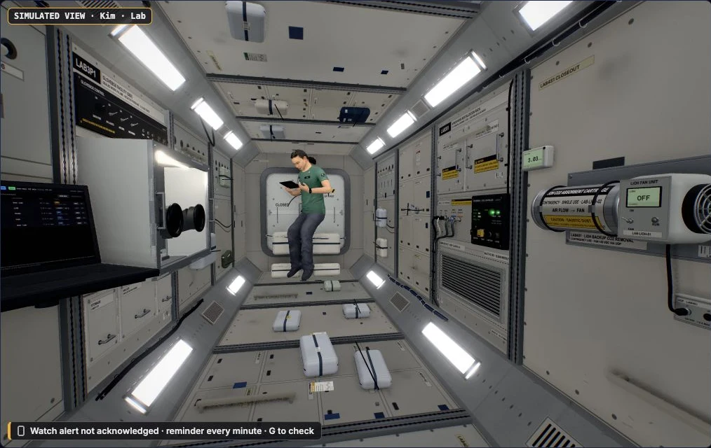
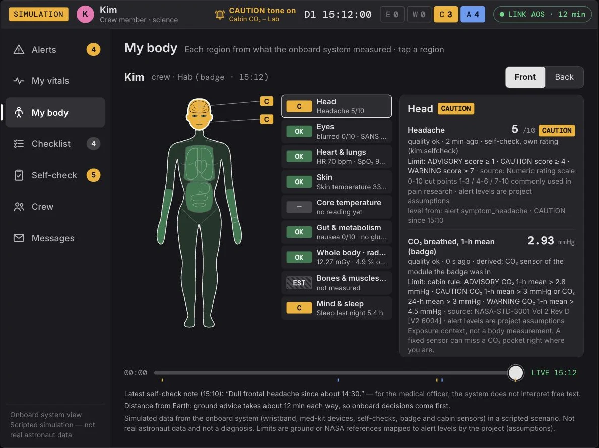
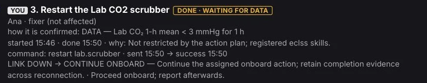
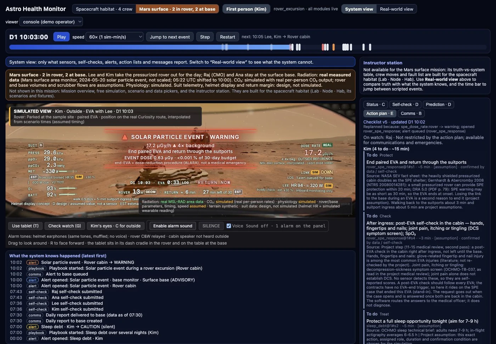

Kim
Affected crew member
Check symptoms
Report the headache. Repeat the oxygen reading after correcting poor sensor contact.
01 / What the software does
The software monitors crew health and cabin conditions. It assigns response steps to crew members and checks new readings to confirm recovery.
This demo covers a spacecraft CO₂ incident and a Mars radiation alert. Click Next to see how each is handled.

02 / Detect an alert
The tablet shows the cabin CO₂ alert, Kim’s reported symptoms and the latest measurements.
The software does not determine whether CO₂ caused the headache.

03 / Assign tasks
Kim and Lee check their symptoms. Ana handles the equipment. Raj reviews the health information and ground advice.
Affected crew member
Report the headache. Repeat the oxygen reading after correcting poor sensor contact.
Second affected crew member
Complete Lee’s own symptom check and measurements.
Equipment operator
Restart the assigned device. Check whether the command succeeded.
Crew medical officer
Review the crew reports. Accept or decline delayed ground advice with a reason.
These are the roles in the recorded spacecraft scenario. Open the app in step 6 to see the task lists.
04 / Check recovery
The scrubber reports a successful restart, but CO₂ is still high. The task stays open until new readings meet the scenario’s recovery conditions. The crew can continue while the Earth link is down.

The system checks later readings against the procedure’s recovery conditions and records the required confirmations. The crew medical officer reviews health evidence and signs off where required. This prototype has not been clinically validated.
05 / Data sources
The Mars alert uses surface radiation measurements from May 2024. We shift the timestamps and keep the measured dose rates. The readings describe the area, not each astronaut’s dose.
NASA RadLab source ↗ISS measurements provide CO₂ history before the scenario starts, plus temperature and humidity data. CO₂ during the scenario is simulated.
NASA Environmental Data App ↗Orion HERA measurements provide the spacecraft’s radiation background. Curiosity waypoints define the route for the simulated rover trip.
NASA RadLab ↗ · Curiosity map ↗
What is simulated? Crew health readings, symptoms, equipment faults and mission events are simulated. The separate spacecraft radiation event uses a compressed 2017 curve with an assumed peak.
06 / Run the software
Choose the spacecraft or Mars scene. Both run in your browser. The spacecraft starts just before the CO₂ alert and plays at 10× speed.
Start at 14:48 as Kim. The CO₂ alert appears on the watch at 14:49.
Drag to look · G: watch · T: tablet · Esc: return
Mars / radiation incidentOpen Mars demo ↗Read the helmet radiation warning and the instruction to return to the rover.
Look for WARNING and DOSE RATE REAL.
Use a desktop for the 3D app. Click once to enable sound. On a phone, use this guide or watch the video.
The prototype uses rules and written procedures. A generative AI agent is not connected.